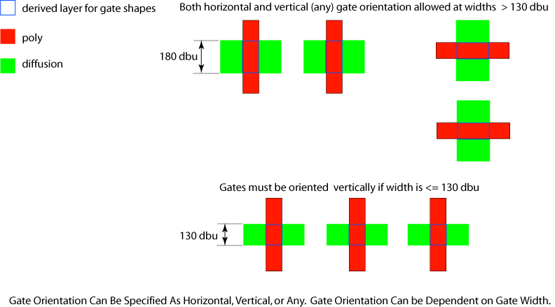

|
 |
 |
||||||
|
|
|
||||||
The built-in oacGateOrientation layer contraint specifies horizontal, vertical or any orientation required for building gates. Gates can be built using any orientation if any orientation is specified or if this constraint is not specified. An optional parameter limits application of the constraint to only those gates that have a width equal to or less than a specified value.
| Constraint type: | oaLayerConstraint |
| Value types: | oaIntValue |
| Database types: | oaTech |
| Object types: | oaAppObject |
The following value types are supported by this constraint:
This oaIntValue is expressed using the oaGateOrientationType enumeration to represent a horizontal (oacHorizontalGateOrientationType), vertical (oacVerticalGateOrientationType ), or any (oacAnyGateOrientationType ) orientation. The default orientation is any direction if this constraint is not specified.
Units: Enum
This value is represented by an oaGateOrientationType enumeration:
| Value | Name |
|---|---|
| oacAnyGateOrientationType | any |
| oacHorizontalGateOrientationType | horizontal |
| oacVerticalGateOrientationType | vertical |
The following parameters are supported by this constraint:
| Name | Value Type | Units | Default | Description |
|---|---|---|---|---|
| width oacWidthConstraintParamType |
oaIntValue | DBU | None |
oacGateOrientation has a single, optional parameter to represent the maximum gate width at which this constraint applies. An oaConstraintParam of type oacWidthConstraintParamType represents the maximum gate width expressed in database units. If this parameter is not specified, the specified orientation applies to all gates. |

This constraint applies at the process level and might be used by layout generation tools that generate or place gates or used by layout checking tools. The constraint is associated with the derived layer representing gate shapes.
Copyright 2002 - 2010 Cadence Design Systems, Inc.
All rights reserved.